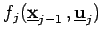

Inhalt Index DeskTop Bronstein

 Optimierung Diskrete dynamische Optimierung Diskrete dynamische Entscheidungsmodelle
Optimierung Diskrete dynamische Optimierung Diskrete dynamische Entscheidungsmodelle


Das Ziel besteht nun in der Ermittlung einer Politik , die unter Beachtung aller Nebenbedingungen den Zustand in den Zustand überführt und dabei eine Zielfunktion bzw. Kostenfunktion minimiert. Die Funktionen  werden als Stufenkosten bezeichnet. Damit lautet das dynamische Optimierungsproblem in der Standardform
| (18.118b) |
Die Beziehungen heißen dynamische und die Beziehungen statische Nebenbedingungen. Alternativ zu (18.118a) kann auch ein Maximumproblem vorliegen. Eine Politik , die alle Nebenbedingungen erfüllt, wird als zulässig bezeichnet. Um die Methoden der dynamischen Optimierung anwenden zu können, werden im Abschnitt Bellmannsche Funktionalgleichungen einige Forderungen an die Form der Kostenfunktion gestellt.